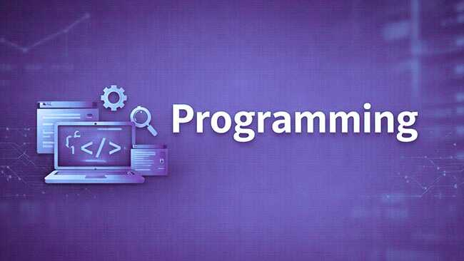
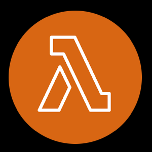
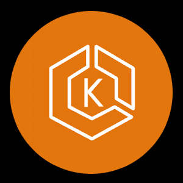
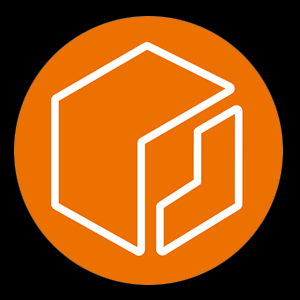
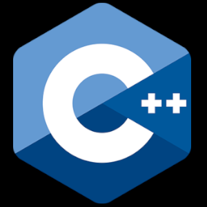

I solve Infrastructure Bottlenecks by automating delivery pipelines, improving platform reliability, and building scalable cloud-native infrastructure.


I've been building, automating, and solving problems for as long as I can remember. Long before I discovered DevOps, I was rooting Symbian and Android devices, exploring programming languages, and creating tools simply because I enjoyed understanding how systems work and making them better.
Over the years, I worked with multiple languages including C++, PHP, JavaScript, Python, Bash, and VB, but the common thread was always the same: finding inefficiencies, simplifying complexity, and automating repetitive work.
My professional journey took an unconventional path. I served as an aviation technician in the Indian Army, where I built automation solutions that saved hours of daily effort during the Pulwama incident and earned recognition for improving mission readiness under pressure. That experience taught me reliability, discipline, and the importance of building systems people can depend on.
Later, while exploring Forex trading, I realized my true edge wasn't speculating on markets—it was treating the market as a complex system and building tools, indicators, and automation to simplify analysis and improve decision-making. That realization eventually led me to DevOps.
Today, I focus on designing reliable cloud-native platforms, implementing GitOps workflows, and eliminating operational bottlenecks through automation and Infrastructure as Code. Using technologies like Kubernetes, Terraform, and AWS, I build systems that are scalable, resilient, and easy to operate.
I enjoy understanding how systems behave, identifying inefficiencies, and turning manual processes into reliable, automated workflows. My goal is not just to deploy infrastructure, but to make systems easier to operate, troubleshoot, and scale.

Built resilient systems focused on reducing manual effort, improving stability, and preventing operational failures.

Eliminated infrastructure inconsistencies through repeatable and scalable provisioning with Infrastructure as Code.

Managed containerized workloads with Kubernetes to ensure reliable and scalable application delivery.

Automated build and release workflows to reduce deployment friction and improve delivery consistency.

Built portable and cloud-native applications designed for scalability and operational simplicity.

Built tools and automation scripts to simplify workflows and eliminate repetitive tasks.

Designed secure and scalable cloud infrastructure to support reliable application delivery.

Implemented monitoring and alerting systems to detect issues early and improve platform reliability.

Maintained and optimized Linux systems to ensure reliability and minimize operational disruptions.

AWS

AWS Lambda

AWS EKS

AWS ECR
AWS S3
AWS DynamoDB

Terraform

Ansible

Docker

Kubernetes

Helm

ArgoCD

Linux
Cloud Watch

Prometheus

Grafana
Loki
Alertmanager

Github Actions

GitHub

Git

Python

Bash

JavaScript

C++
PHP
Let's connect to automate repetitive work, simplify operations, eliminate bottlenecks and build systems that are reliable and easy to scale.
Mail Me